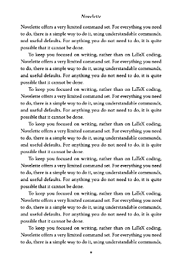

Novelette - shade mode and guides
The first image shows a page printed without using shade mode. The second image was printed using shade mode, with gray margins.
In shade mode, the area between the baseline of header text, and the highest part of main text, is shaded light gray. If header text has descenders, they will be within this area. The highest part of main text allows for uppercase letters with diacriticals, so no part of main text enters this area.
The area between last baseline of main text, and lower margin, is shaded light gray. Descenders of main text will be within this area. Since this page layout has a footer, it will sit entirely within this area. The baseline of page number is slightly above the bottom margin, to allow for possible descenders (as with oldstyle numerals).
This is a recto (odd-number) page, so its left (inside) margin is slightly wider than its right (outside) margin, to allow for binding glue. The glue zone (estimated) is the darker gray stripe within the left margin.
Four pairs of guides are in the side margins, at lines 8,12,16,20. The bottom of each guide rectangle is at a baseline of main text. The top of each rectangle is at standard x-height.
